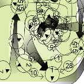

Interview with kode9
PA. Tell us a bit about yourself.
kode9. You are speaking to kode9 polymedia through Steve Goodman.
PA. What do you mean by Sinofuturism? How does this tie in with Afrofuturism? (Wu Tang Clan?) We at Powerbase are very into the "martial world" of Chinese legend, "rivers and lakes" as a metaphor for adventyrous thinking, where everything is of epic proportions.
kode9. The primary focus of kode9 polymedia is to map and accelerate a hypercultural matrix currently engaged in some kind of protracted war, eroding the sensory banks and channels of the Occident. Kode9 follows 2 swerving lines which cut across this matrix. These are otherwise known as afrofuturism and sinofuturism. For kode9 they are more accurately termed afro-vorticism and sino-vorticism. Why? Because kode9 is obsessed by turbulence. More specifically, the art of war in the art of noise.
Sinofuturism (or sino-vorticism as we have suddenly decided to call it) really constitutes the abstract dynamics of the art of war.
On one level this is merely nothing more than an acknowledgement that in cybernetic capitalism, classic Chinese martial concepts of softwar, fluid organization and notions of 'survival far from equilibrium' have seeped into the physics of everyday life (in the military, business, guerrilla, audiotribes...etc). But the issue for kode9 is not 'liquid' metaphors but liquid dynamics. There are very precise microphysical processes involved in fluid mechanics at the onset of turbulence...and what makes the ancient Chinese and Japanese hydro-poetics and strategics more interesting than a reading emphasizing metaphors is their recursive base physics, their clear awareness that the cosmos is a system of nested vortices, twisting with parallel processes on every scale.
So there is a convergence here between surviving the acceleration of hypercultural flows in cybernetic culture and a persistent conceptual orientation tuned to the base turbulence of everyday life and to the psycho-geographical warping which we are all undergoing. It is a fascinating question why the last years has seen an explosion in the conceptual recourse which the West is making to the Orient. And so kode9 would take the rapid ultrabourgeois take up of Feng Shui, Tai Chi, etc. not merely as some kind of cultural appropriation of an alien culture but rather as part of a sinofuturist virus which is sweeping across the Occident, to varying degrees infecting the sensory orientations of everyone, from military and business strategists to housewives, designers, junkies, console gamers, office workers etc. And so what is interesting here is how all this relates to what McLuhan called the Orientalization effect of electronics, a species mutation for strands of humanoid life into a virtuality which sees us not as Cartesian headcases inhabiting weightless fields of pure vision based on literal criteria, but is tactile, hypersonic and fundamentally vortical. Sinovorticism subjects the dominant sensory hierarchy to a literal revolution by subjecting the human organism to torque, so that limbs unravel themselves, and as Kodwo describes, flee in all directions.
And then there is the pop cultural resonances of a simultaneously abstract and concrete sinofuturism. And it's here you start to see that nodal point in the hypercultural matrix where sinofuturism converges with afrofuturism, as in fact both were being rotated by a single vortex inhabiting the future, now sucking us towards it. Anyway with the strains of sinofuturism which have infected hip hop, most notably the Wu Tang, we're talking about a vast drug-audio-tech interface which includes martial art movies, computer games and the micro-militarization of urban, especially audio culture. We first saw signs of this in the sixties and seventies with the US ghetto militarization converging with Maoist urban tactics, and then the impact of films like Enter the Dragon on audio culture generally with Scratch Perry's Kung Fu and Prince Jammy's Dub Kamikazi. Out of all this stuff you start to get the sense that producers and DJs are making this connection, the connection between the guerrilla dynamics of martial arts, of 'fighting without fighting', and at the same time a mode of navigating in a virtual yet deeply viscous space.
Then again sinofuturism could just be a fucked up barometer of the gradual and turbulent rise of East Asia in the 21st century.
So for kode9 when you start following the traits of sinofuturism, you inevitably get sucked towards a version of cyberspace which is acoustic, turbulent and haptic...and then you're already on an afrofuturist line. In fact kode9 is basically concerned with the topology of sinofuturism and afrofuturism; how they loop together on multiple scales, from the numerological to sonic and so on. So kode9 explores this hypercultural node or intersection. It's really all about rhythm.
So with afrofuturism or afrovorticism you have the most devastating noise tacticians. But more interesting is the conceptual vorticism of sonic fiction which Kodwo tracks. Afrovorticism is the celebration of the glitch in the matrix, the accident. The glitch is treated, as Lucretius would say, as the clinamen, a swerve away from the laminar flow of metricity. As Kodwo describes in Motion Capture, the producer nurtures the bug, builds a polyrhythmic information architecture out of the patterns imminent to the glitch, its degree of intensity and asymmetric potential. From the glitch emerges a sonic fictional matrix webbing up the audio with its hype.
PA. What does the afrofuturist scene look like in Britain, if there is one?
kode9. In the UK kode9's afrofuturism taps from two pools of activity in this region of the Black Atlantic, both simultaneously conceptual and sonic. One pool contains Kodwo Eshun's conceptotechnics and Ccru's researches into the Hyper-C audio syndicate (here we have the issue of the nested relation between sonic fiction and what the Ccru term hyperfiction.). The other is populated by UK underground hyperdub. Emerging properly just as the drugs turned sour, the scenious of UK hyperdub spat out the audio war machines which we now know as hardcore, jungle, drum'n'bass and 2step garage...
PA. We really really liked your datastreams, can we expect more stuff like this soon?
kode9. You will hear much more regarding our Y2k datastream. The coincidence of cyberhype and the non-event of the M-bug confirms much about calendric conservatism and our deeply hyperfictional cultural condition.
PA. What is your take on the Syzygy numerology?
kode9. Now that is complicated. What is your take?
PA. We were kinda hoping that you would explain it to us... To us, the Syzygy numerology seems like a very systematical Burroughs-esque tool to destroy all dogmatic verbal systems. Powerbase has been dedicated to the use and production of theory-infested paradigms and systems like this. Things that fuck with perception to figure it out, whilst thriving on the perverse kick of self aware theory production; when you know you scripted that piece of reality that you just experienced, only to feel that it is a program running out of control, yer own renegade spawn.
A lot of the american psychotech books like those by Robert Anton Wilson and Tim Leary... their weak point is that they hype a very anal-retentive control of the mind and its thoughts. Sort of the mind as a happy little camp where everything has to be happy, or perish. This old view of the mind as something to be cultivated... well. We prefer the out of control test dept: to design our memes at random, and letting them evolve as they like...
kode9. Well it goes like this. . .it has only been through an unlikely series of coincidences that we ever came into contact with the syzygy numogram. Basically kode9 was undergoing a series of explorations into dub, remixology and the abstract transposition of dub techniques and methodologies in realms aside from the audiosphere. So we were exploring the numeric traffic which exists between digital audio sequencing and electronic writing. While Burroughs cut-up methodology stood as one version of what this might be, especially when he talks in Electronic Revolution about the tactical application of multiple sound sources to incite riots and textual cut-up as a technique of encryption, it seemed that in the late 1990s what Burroughs was suggesting was deeply entrenched in the operating system of normality. And it seemed to offer no account of what Kodwo describes as “putting writing on the second deck and accelerating it”. So instead of cut-up we were exploring the application of breakbeat science onto text using a sort of sampler methodology. . .with this move, the process of writing suddenly demystified itself, revealing documents as tiny weather systems of alphanumeric characters. So we would snatch a conceptual break and glitch and nurture it, send it through a variety of filters, timestretch it, pitch it up and down, chop it up, splice it into various recombinations and so on. . .and were experimenting with various techniques of numbering text, installing a complimentary rhythm without either overcoding or metricizing it on the one hand, or sending it into chaos on the other.
Simultaneously, Ccru was exploring mechanomics, gematria and the schizonumerics of digital reduction through the work of the infamous Professor Barker. . .in order to develop their previous work regarding flat numeric cultures which did not rely on a system of belief in some transcendent entity but rather a certainty in the immanent traits of number itself. There will be much more regarding this appearing on the Ccru website soon.
Anyway, the discovery of the Syzygy numogram was a coincidence in the sense that it swept us all beyond some of the blocks which constituted the problems I’ve just mentioned; problems related to the proliferation a ‘counter’ culture, where the numerical distribution of a population is coincident with its mode of cultural production. The numogram contains superficial similarities to the Kabbalistic tree of life in that both are constructed as decimal diagrams, treat names as numbers, numerize by digital reduction and cumulation, and map zones onto spinal levels. According to the Ccru however, the Tree of Life stands as a kind of arborescent and to some extent arbitrary variant of the numogram. Ccru’s work has also uncovered a hypercultural matrix which connects the numogram to the I Ching. Both share a basis in double-numbering systems, and there appears to be correspondences between the time-circuits of the numogram and the hexagrams of the I Ching. The convergences and divergences are detailed more fully in Ccru’s swarm 4 of abstract culture, DIGITAL HYPERSTITION. In this volume we also see how the numogram converges with various traits, e.g. recursive scaling, of African mathematics and this is illustrated in 2 essays by Ron Eglash.
The numogram, as with its better know counterparts just mentioned, can be a dangerous tool in the wrong hands, as we have found out. . .the hard way. Since its appearance in our midst, our strategic alliances have been severely tested and our reality severely threatened. But this was just fiction.

Out of the tension generated by the appearance of the numogram have emerged endless channels. The SYZYGY event which the Ccru held in Central London in Feb/March 1999 in celebration of the numogram saw the production of nested numerical, textual (see abstract culture swarm 4) and sonic matrices, which treated the numogram as an abstract rhythmic system. For kode9, it was an opportunity to design, with various producers from the Katasonix kru, the central zone of the numogram with its currents and time-glitches into an audioscape. This was the Nomo CD. And we had the chance of remixing some rare source material from the Hyper-C audio syndicate.
. . .so what’s our take on the Syzygy numogram. . .it’s complicated..
In Abstract Culture swarm4, the strange case of Cecil Curtis unfolds into a state of tropical jungle enduced Lemurio-psychosis, “I knew that I had in front of me a key that would unlock all the secrets of my life. . .I was unravelled in this maze of coincidences, and could do nothing but follow its threads forever.”
PA. A reading of most of the afro-futurist texts evoke a strong visual response in the mind of the reader: do you know of any films that are fucked up enough to illustrate their themes, or is only the non-visual medium of music, visual enough? Is sampladelic hyperdub music the only vehicle capable of carrying the information across [except theory texts]?
kode9. Well there has definitely been some key visual events in recent years. We’re now well into a phase where breakbeat science, as an abstract machine is being rigourously deployed in mainstream visual culture with all the asymmetry, twitches, stuttering and nervous realignment. It a continuation of hyperdub’s celebration of glitch culture. So we have music videos now which look like shoddy motion capture, where the trajectory of bodies has been gridded but at low resolution so that the actual vector is the equivalent of a pixelated graphic. You can get a sense of this visual kinaesthetic when you try to watch streaming video over an average net connection. . .you get a jarring effect between your optical input rate and the way the video is compressed. So there is a fascinating situation where Hype Williams’ afrofuturism and its interface with US hip hop and R&B is simultaneously the bleeding edge of global audio-visual culture and running MTV. There is no contradiction here, its just totally viral. Its also pure cyberpunk, taking the clunkiness, the visual malfunctions of the digital age and turning them into deeply infectious psycho-sensory triggers.
The obvious vision which appeals to kode9’s hydraulic sensibility however is the scene in the middle of Missy Elliot’s “She’s a Bitch”, when the dubmarine cyborgs emerge from a jet black ocean, shrouded by a swirling aquapocalyptic sky and start doing the Hype Williams jitterbug. That’s a stunning scene. Its like hyperdub summed up in one sequence. . .distilled, rarified liquid dystopia. . .that’s what kode9 follows. Its also pure Hyper-C. In that one sequence you see this polytendrilled hydraulic Golem emerging where hyper rhythm converges with intensive liquid flow. Digital turbulence.
Sampladelic hyperdub isn’t the only medium of transfer, but it has certainly proved to be the bleeding edge of sensory assault.
PA. A lot of the discourse here revolves around the loss of control, like in Kodwo Eshun's essay Abducted by Audio where the listener becomes just a puppet to the music; we also have the books by Simon Reynolds which talk about new musical genres like 'darkcore' or 'harshstep' growing out of the "drugs turning sour" as you wrote, when the dancers are completely at the mercy of their drugs. Is this loss of control to be understood as a preparatory step, a process which will induce memetic mutations allowing us to navigate in delinearized space (kind of like Tim Leary's ideas about preparing for life in zero-gravity) or are we talking about something else here?
kode9. We’re not so interested in models of virtuality based around zero gravity. . .not transcendence and weightlessness. . .the virtuality we are describing has is viscous. . .. . .sticky and sometimes cerating. . .the real memetic mutations take place transdermally, distributed across the skin as opposed to out of the skin. Bio-technically we are definitely in a serious transition phase towards deep polymedia, but its maybe more useful to characterize the preparatory inititiation less in terms of the either/or of ‘control’ and ‘out of control’. Maybe possession is closer to it, where crusted over glands, limbs or organs get activated, switched on, and you start to get a sense of ‘what a body can do’ when the human security system is subjected to torque and starts to fall away. It is very Spinozistic. Culturally we are still shaking off the often dreary dual legacy of the hippy and the artist, a legacy which romanticises a loss of control, but actually continues to resonate within the game of control. And there is usually a black hole or a padded cell waiting. It also strikes us as a very male model of desire. We’re more interested in plateaus of intensity than nose dives.
What is more interesting about darkside hyperdub has been that actually there are very precise mechanisms involved in unpicking control architectures. It’s more like a ritual of rhythm, which stretches from microscopic to global scales, from production techniques hacking the metricity of the audiosphere, to crowd turbulence and global proliferation. And because all of these processes are more ritualistic than just purely ‘out of control’, then you get prototypes of sustainable systems emerging as opposed to ‘crash and burn’ subculture. So where darkcore connects with desire is not necessarily through the inducement of a loss of control, but rather the feeling that you’ve entered a whole new game with its own rules. There’s a classic line in ‘Abducted by Audio’, the last line in fact where Kodwo describes the fear/pleasure circuit of hyperdub. . .”It’s like you entire body would like to vacate. Basically, you want to go AWOL, from yourself. But you can’t, so you stay and enjoy it.” That’s it exactly. It’s the tao of turbulence.
PA. What are kode9s current research interests?
kode9. Kode9 is currently in an intensive sound production phase and there will be releases probably later in the year. But there is a whole batch of mp3 stuff which will be uploaded in the next few months. At the moment we’re tracking an interesting dynamic. . .the latest instalment of UK hyperdub is strikingly similar to one which started occurring about 6 years ago when early jungle converged with techno and sprayed off into multiple directions, with one strain of darkcore which we now know as the techstep-neurofunk-riffstep thread, which Simon Reynolds is always slagging off, asserting a strange hegemony on the scene. Perhaps there is a parallel dynamic occurring now as a convergence occurs between 2step garage(which is dominating London pirate radio) and the less than fantastic nu school breaks scene. Only this time it’s occurring at 135bpm as opposed to 175bpm. So kode9 is trying to simultaneously pre-empt and sidestep this fusion, and the sound we’re moving towards is probing the potential for putting speed back into the 2step sound, without sucking out all the juice, as techstep did to jungle. .
We are also working with material from the Hyper-C audio syndicate and there should be a release some time next year. Ccru are writing a pulp horror novel, and her sister company Abstract Machines is in the process of turning aspects of the Syzygy numogram into a computer game design, and there is loads of material about to hit the Ccru website regarding the abstract machine of hype as the fundamental process of technoculture.